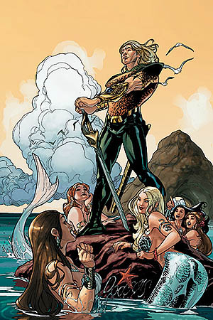

Arthur Joseph Curry
Arthur Joseph Curry is the second DC Comics superhero to be known as Aquaman. Created by Kurt Busiek and Jackson Guice, he first appeared in Aquaman: Sword of Atlantis #40 (May 2006). As part of DC Comics' One Year Later event, Aquaman's series was renamed Aquaman: Sword of Atlantis with issue #40 (May 2006). The new developments include a new lead character, a new supporting cast, and the inclusion of sword and sorcery-type fantasy elements in the series. The character was short-lived, and was not seen much leading up to the revival of Aquaman in the 2010 Blackest Night miniseries, and is not featured in DC continuity at all following its 2011 reboot, The New 52.
Arthur's story resembles versions of the original Aquaman's. While awaiting transport to Miami, Florida, a young man named Arthur Joseph Curry is washed out to sea when a storm ruptures the tank he is in. This Arthur Curry, much like the Golden Age Aquaman, is the son of oceanobiologist Dr. Phillip Curry. Arthur's mother, Elaine, died in childbirth and Dr. Curry was forced to use a mutagenic serum on his son when he was born three months premature. Arthur has lived his whole life in the main tank of his father's research facility at Avalon Cay, his only window to the outside world being television.
Shortly after his arrival in the sea, Arthur is mentally contacted by the mysterious "Dweller of the Depths," a deformed humanoid with tentacles instead of hair and a left hand made of water. The Dweller urges him to help King Shark, who still bears scars from a previous battle with Aquaman during the recent Crisis. The Dweller, confusing Arthur for Aquaman and calling him his "charge," tells Arthur and King Shark of a prophecy regarding Arthur's future, a prophecy which seems to be a distorted version of the original Aquaman's history. The Dweller reveals that the original Aquaman was "transformed into one akin to a great and terrible enemy of your people and became the vessel of power strange, ancient and terrible."
Arthur's first trip causes him to meet many of Aquaman's supporting characters including Mera, the Sea Devils, Vulko, and eventually Ocean Master. During this adventure, the Dweller progressively realizes that he himself is the original Aquaman, despite having no memory of his former life.
Later, Arthur finds a humanoid squid named Topo, a naive youth attracted by superheroics and seeking to become a sidekick, and Tempest, now amnesiac, unable to breathe water, and implanted with a post-hypnotic suggestion warning of an upcoming battle. The battle soon occurs, and the Dweller/Orin is apparently killed. The Justice League is called in to evaluate Orin's situation, but are unable to determine if he is truly dead, or if he can somehow resurrect himself due to his new magical nature.[42]
In Sword of Atlantis #57, the series' final issue, Aquaman is visited by the Lady of the Lake, who explains his origins. The original Aquaman had given a sample of his water hand to Dr. Curry in order to resurrect Curry's dead son, Arthur, whom he had named after Orin. When Orin attempted to resurrect Sub Diego, a part of his soul attached itself to the dead body of Arthur Joseph Curry, while Orin mutated into the Dweller. Blaming himself for Orin's death, Aquaman vows to never be called "Arthur" again, refraining from using the "stolen" name, asking only to be called Joseph in the future.[62]
Joseph is considered as a candidate for the new Outsiders by Batman. After seeing him in action with Metamorpho, however, Batman decides against his induction.[63]
In their quest to rid the Earth of all forms of kryptonite, Superman and Batman journey deep below the sea and find a large amount of it. The two of them are met with hostility by Aquaman and King Shark. A brief fight ensues, but eventually Joseph allows them to take the kryptonite. Before doing so, he points out that not everyone may want Superman to find all of Earth's kryptonite, and that he would have to be at least part human to know that.[64]
Joseph Curry would continue to be the stand-in king of Atlantis until after the "Final Crisis" storyline. It was revealed that Joseph had stepped down from his position due to being unable to deal with the pressure of carrying on Orin's legacy. Tempest later finds Joseph's trident and costume draped over Orin's throne, confirming that he had abandoned his duties.[65]